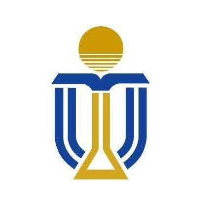
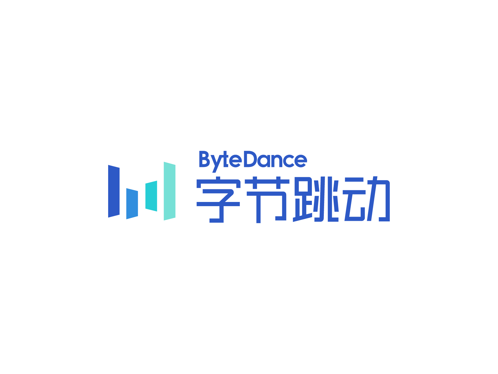
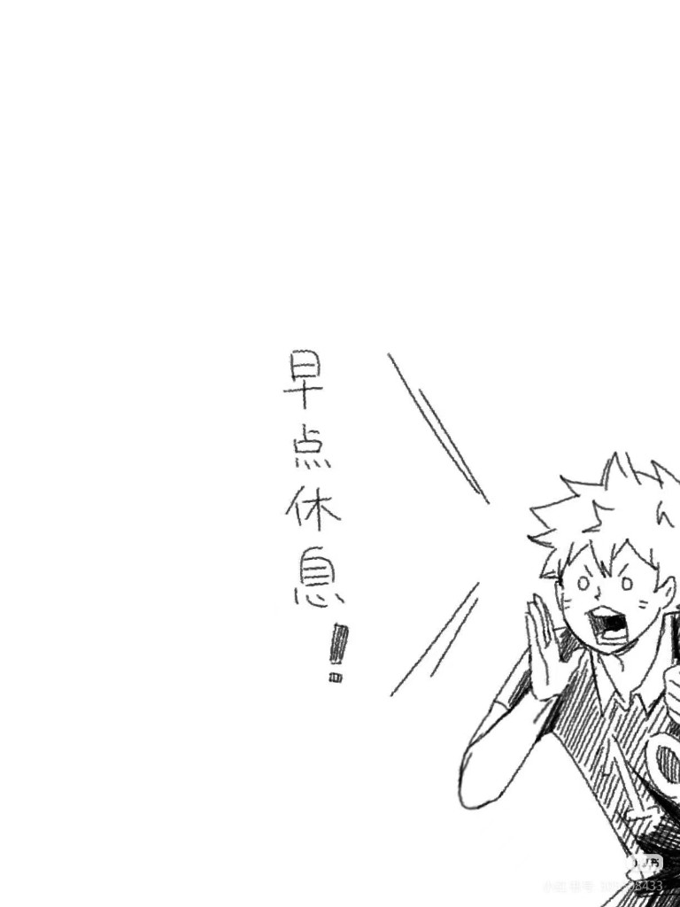
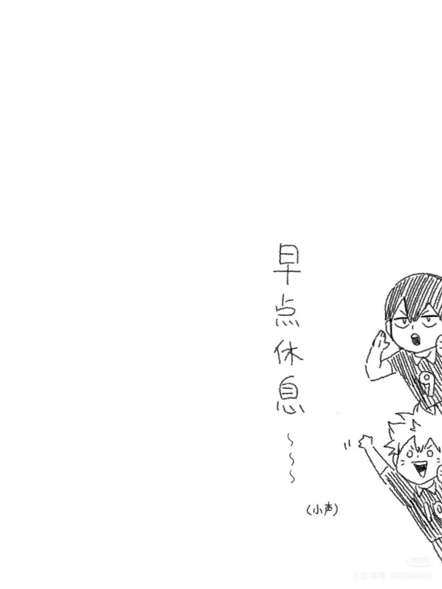

基于城市针灸理念的社区嵌入式服务
社区智能化与平台原型：调研、可视化与路演材料。
下载详细资料（PDF）拥有计算机科学与人工智能双重学术背景，曾在字节跳动、面壁智能及韶音科技担任核心产品/数据实习生。致力于将前沿大语言模型与智能硬件相结合，创造极具商业价值与用户体验的 AI 产品。
与下方「项目经验」中的重点案例对应；如需了解背景、过程与成果材料，可下载各项目的详细说明文档。
社区智能化与平台原型：调研、可视化与路演材料。
下载详细资料（PDF）多模态交互与嵌入式 LLM：方案说明与职责拆解。
下载详细资料（PDF）硬件与 UI 设计：需求说明、原型与渲染展示。
下载详细资料（PDF）

项目简介：本项目是针对一线城市城中村社区设计的服务式平台，集成了传感器、数据库，AI和可视化界面的智能监控管理系统。通过实时数据收集与AI辅助决策，为城市村庄提供高效的管理支持及预测潜在事件。
主要职责与成果：
项目简介：该项目旨在构建一款具备自然情感表达与多模态交互能力的智能家居陪伴机器人。系统通过传感器输入、动作控制算法与大语言模型深度融合，使机器人能够理解自然语言、识别用户情绪，并以动作、姿态与声音进行生动表达。项目整体搭建包含硬件架构设计、运动控制、语音交互、大模型嵌入与情绪表达框架构建，目标是在家庭场景中实现更具陪伴感和情绪联系的机器人互动体验。
主要职责：
项目简介：一款借助触感传递情感的智能产品。研究发现借助触感可以实现感情传递，基于此我们设计出一款触摸球实现双方情感的互动。球体有6种不同材质供用户选择，在不同情景下代表不同的情绪。为增加产品的功能，实现一物多用将安置触摸球的容器设计成小夜灯；同时为减小收纳空间，设计出可折叠式灯罩和便携的包装盒。在此基础上，设计对应的UI界面，使交互更加有效、便捷。
主要职责：
项目成果：产品评估问卷调查收获用户九成以上好评，参加国家级设计比赛 NCDA 中荣获三等奖。
英语：雅思 7.0 / CET-6 600
日语：没学过但资深二次元
韩语：资深韩剧人，可以听懂
工作之外，我是被这些事物驱动的：

